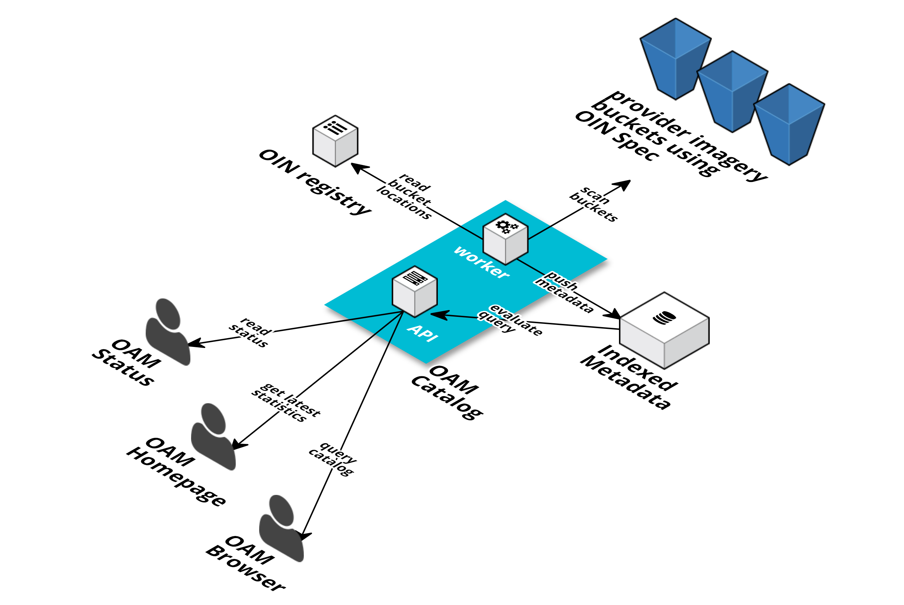

Catalog Group
Catalog Components

Components that index and serve imagery metadata. The Open Imagery Network (OIN) specification allows providers to annotate their imagery with metadata and register them to the network in a standard way. The OAM Catalog is a collection of OIN spec’d metadata.
OAM API
The OAM API in the main component of this group. It contains two sub-components that work together to provide imagery metadata to users: The worker and the catalog API.
Worker subcomponent
Written in NodeJS, runs periodically.
- Reads the OIN registry JSON file that contains the location of the imagery and metadata provided by OpenAerialMap partners, as well as the HOTOSM bucket. These are called “imagery buckets”
- Scans the buckets for metadata
- Indexes the metadata to the OAM Catalog database (MongoDB instance).
API subcomponent
The API provides an interface to query the catalog for metadata over time and by area. It also provides simple statistics that power the OAM homepage. This component is written in NodeJS
OAM Browser
A web application that allows a visitor to the website to search for the imagery by browsing a world map and toggling parameters. In the background, it queries the catalog API and displays the results on the map.
OAM Homepage
A web application that serves as a homepage for OpenAerialMap. The homepage queries the API for simple statistics and latest imagery.
OAM Status
Shows the status of the catalog API. Written in NodeJS, it uses New Relic to check for the overall health of the API as well as monitoring the catalog worker.